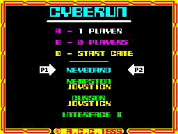
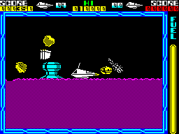
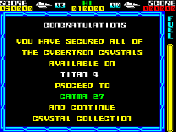

| The menu, the panel and the font |
Three screens, each read off the screen of the game running in SkoolKit's simulator, and the font that prints them. Everything on them is drawn from data by a handful of small routines, all drawing upwards from a bottom row: print_string prints a text record, draw_bitmap copies a bitmap, fill_attributes paints a rectangle of attributes, and draw_frame draws a frame from a 17-byte description (see the panel's bitmaps).
The menu -- The panel -- The planet secured -- The font

As menu leaves it, read at the top of menu_loop a second after the title tune was cut short: the frame from menu_frame (its corners and ticks set by menu), the twelve text records of menu_text -- the title at double size -- the copyright line's two glyphs (copyright_glyphs) and the rule under the title. Each player's pointer (pointer_p1_graphic, pointer_p2_graphic) is moved a line a pass towards the line of its control method by move_method_arrow, at the lines in method_lines, and drawn over itself with no erase: its blank lines rub out what it leaves behind. The chosen number of players flashes white every four passes (colour_player_line). A and B choose one or two players, 1 and 2 step the players' methods, 0 starts (menu_keys).

A game started from the menu and played still for eight seconds, so that the gauge's column has climbed to full, with the no-damage poke (a RET at contact_damage's second half, $8F76) so that the ship icon under the score stays white; the picture is otherwise as the game drew it. draw_panel draws the panel once a life: the score lines in yellow for the player in play and red for the other (score_labels and the records after it), the lives, HI and the high score, the ship icon under each score (score_bitmap), the frame round the play area from frame_description, and the fuel gauge's outline and label (draw_fuel_gauge, fuel_label). After that only the score, the lives and the gauge change. The gauge's column moves a line a pass towards the fuel's level by toggling two rows with XOR (update_fuel_gauge), which leaves it a rounded top; it turns red on two passes in four once seven tenths of the fuel is used (flash_fuel_gauge). Each hit recolours the ship icon under the score -- yellow, magenta, then black (contact_damage) -- and a refuel pad makes it white again.

A game played in the simulator, a life staged inside the rocket with all eight parts built by the game's own restart, and played on through the docking and the launch until level_done has called planet_secured and is about to play the level's tune. The lines are the four records at planet_secured_lines, the finished planet's name copied from planet_names into planet_secured_name_text, and the four from next_planet_lines with the next planet's name; the score has had its ten bonuses of 5000, each with a zap.
45 characters of seven bytes at font, the bottom row first, bit 0 of every row clear for the gap between characters; the eighth line of the cell is left blank. The codes are the game's own: 0 to 25 the letters, 26 to 35 the digits (a score digit is printed as $1A plus the digit), then two spaces either side of the II of the menu's Interface II, a full stop, a dash, and four pieces of the rule under the menu's title. Each is printed here by print_string, the game's printer, from a text record -- x, y, attribute, count, codes -- written in the sprite buffer; print_char finds a character at the font plus seven times its code.
0: A | 1: B | 2: C | 3: D | 4: E | 5: F | 6: G | 7: H | 8: I | 9: J | 10: K | 11: L | 12: M | 13: N | 14: O |
15: P | 16: Q | 17: R | 18: S | 19: T | 20: U | 21: V | 22: W | 23: X | 24: Y | 25: Z | 26: 0 | 27: 1 | 28: 2 | 29: 3 |
30: 4 | 31: 5 | 32: 6 | 33: 7 | 34: 8 | 35: 9 | 36 | 37 | 38 | 39 | 40 | 41 | 42 | 43 | 44 |
Bit 7 of a record's attribute asks for double size: print_string patches the printer's JR to reach print_char_double, which doubles each row's two nibbles to a byte each through double_bits and writes each on two lines, 16 by 14 pixels and a 2 by 2 block of attributes -- the menu's title. The same characters, printed that way:
